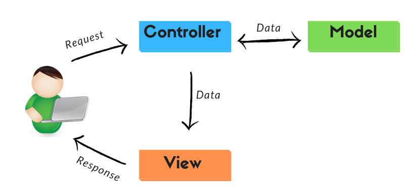
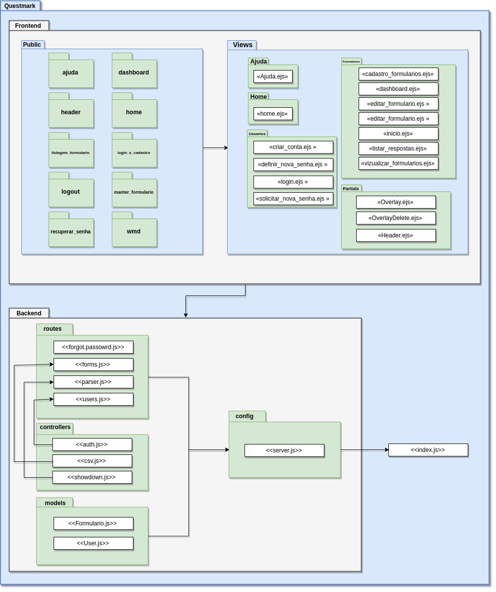

Documento de Arquitetura de Software
1. Introdução
1.1 Finalidade
Este documento tem como objetivo informar, de uma forma geral, a arquitetura do projeto Questmark. Tanto o comportamento do software, quanto as tecnologias utilizadas para o desenvolvimento do mesmo devem ser expostas de forma clara, explicativa e objetiva para o leitor.
1.2 Escopo
Questmark é uma plataforma que irá possibilitar a criação de formulários em Markdown, de uma forma descomplicada, para qualquer usuário que fizer cadastro no mesmo. O projeto também dá ao cliente a comodidade de visualizar um dashboard, de simples entendimento, com as respostas dadas em seu formulário por um terceiro usuário. Se caso o usuário preferir, poderá baixar as respostas em um arquivo CSV. O documento apresentará toda a parte arquitetural para a confecção do Questmark, a fim de tornar claras as características arquiteturais do projeto.
1.3 Definições, Acrônimos e Abreviações
- FGA: Faculdade do Gama - Campus da Universidade de Brasília localizado no Gama.
- MDS: Métodos de Desenvolvimento de Software.
- UnB: Universidade de Brasília.
- Markdown: Linguagem de marcação.
- MVC: Model View Controller.
- HTTP: Protocolo de comunicação utilizado para sistemas de informação de hipermídia.
- CRUD: Create Read Update Delete.
- JSON: JavaScript Object Notation.
- VM: Virtual Machine.
- CSV: Comma Separated Values.
- API: Application Programming Interface.
1.4 Referências
André; Gabriel; Guilherme; ALMEIDA; Weyler. Cidade Democrática: Documento de Arquitetura. Disponível em: https://github.com/fga-gpp-mds/2016.2-CidadeDemocratica/wiki/Documento-de-Arquitetura. Acessado em 16 de novembro de 2019.
The jQuery Foundation. O que é jQuery? Disponível em: https://jquery.com/. Acessado em 16 de novembro de 2019.
Treinaweb. Padrão MVC - Symfony. Disponível em: https://www.treinaweb.com.br/blog/tag/symfony/. Acessado em 23 de novembro de 2019.
Canalti. Arquitetura cliente-servidor. Disponível em: https://www.canalti.com.br/arquitetura-de-computadores/arquitetura-cliente-servidor/. Acessado em 23 de novembro de 2019.
1.5 Visão Geral
O documento, através de dez principais tópicos e suas ramificações, visa detalhar a arquitetura e os requisitos do software do projeto. Tendo como objetivo facilitar o desenvolvimento e esclarecendo dúvidas a respeito deste.
- Estrutura do documento:
- Introdução;
- Representação da Arquitetura;
- Metas e Restrições de Arquitetura;
- Visão de Casos de Uso;
- Visão Lógica;
- Qualidade.
2. Representação da Arquitetura
A arquitetura implementada no projeto segue o modelo cliente-servidor em que o processamento da informação é dividido em módulos ou processos distintos. Dessa forma, o cliente(usuário) solicita um determinado serviço enquanto o servidor oferece o serviço solicitado pelo cliente.
Neste projeto tecnologias como Bootstrap,Html,Css,Javascript e JQuery foram utilizadas para o lado do cliente(frontend), e no lado do servidor(backend), camada que trata as requisições e realiza a comunicação com a camada de persistência de dados, foi utilizado o NodeJS.

2.1 Padrão Arquitetural
O padrão arquitetural utilizado para modelagem do projeto foi o MVC.  * Model: parte lógica da aplicação que gerencia o comportamento dos dados. * View: parte responsável pela interação e exibição dos dados para o usuário final. * Controller: parte responsável por tratar as requisições do usuário, assim realizando ações e controlando a camada de view e model para chegar ao resultado desejado conforme as regras de negócio do projeto.
2.2 Tecnologias
2.2.1 NodeJs
NodeJs é uma plataforma de aplicação, na qual você escreve seus programas com Javascript que serão compilados, otimizados e interpretados pela máquina virtual V8. Essa VM é a mesma que o Google utiliza para executar Javascript no browser Chrome, e foi a partir dela que o criador do Node.js, Ryan Dahl, criou o projeto. Foi a tecnologia que atendeu as necessidades da equipe.
2.2.2 Express
É framework web mais famoso para Node.js. Inclui suporte a diferentes view engines, funciona no padrão MVC, possui JSON e HTTP na caixa, trabalha com URLs amigáveis nativamente e muito mais, sem deixar de ser bem leve, o tornando indispensável para API’s e aplicações web escritas em Node.
2.2.3 Mongoose
Mongoose é uma biblioteca do Nodejs que proporciona uma solução baseada em esquemas para modelar os dados da sua aplicação. Ele possui sistema de conversão de tipos, validação, criação de consultas e hooks para lógica de negócios. O Mongoose fornece um mapeamento de objetos do MongoDB similar ao ORM (Object Relational Mapping), ou ODM (Object Data Mapping) no caso do Mongoose. Isso significa que o Mongoose traduz os dados do banco de dados para objetos JavaScript para que possam ser utilizados pela aplicação.
2.2.4 Passport
Passport é um middleware de autenticação para NodeJS, extremamente flexível e modular. Passportjs pode se de forma extramente eficiente para qualquer aplicação Web baseado no Express. Com um conjunto de estratégias, com suporte na autenticação para facebook,twitter e mais. A Estratégia adotado no Questmark foi a local.
2.2.5 HTML
HTML (abreviação para a expressão inglesa HyperText Markup Language, que significa Hipertexto de Marcação de Linguagem) é uma linguagem de marcação utilizada na construção de páginas na Web. Documentos HTML podem ser interpretados por navegadores. A tecnologia é fruto da junção entre os padrões HyTime e SGML.
2.2.6 CSS
CSS (Cascading Style Sheets) significa Folhas de Estilo em Cascata é uma linguagem de estilo utilizada para definir a apresentação de documentos escritos em uma linguagem de marcação, como HTML ou XML.
2.2.7 Bootstrap
Bootstrap é uma biblioteca open-source CSS framework direcionada á responsividade, mobile-first front-end web development. Com diversos tipos de formulários, botões, navbar entre outras interfaces e componente.
2.2.8 EJS
O EJS (Embedded JavaScript) é uma engine de visualização, que permite de uma maneira fácil e simples o transporte de dados que estão no backend para o frontend. Basicamente, o EJS utiliza a própria marcação do HTML com o acréscimo de códigos em JavaScript para o seu funcionamento.
2.2.9 Crypto
O módulo de criptografia(Crypto) fornece funcionalidade criptográfica que inclui um conjunto de wrappers para as funções de hash, HMAC, cifra, decifração, assinatura e verificação do OpenSSL.
2.2.10 @sendgrid/mail
Este é um serviço dedicado para interação com o terminal de email da API do Sendgrid v3 . Utilizado para envio de email.
2.2.11 - JEST
Jest é um poderoso Framework de Testes em JavaScript com um foco na simplicidade. Com o jest é possível realizar testes unitários, de integração e de aceitação. Além disso, é possível gerar relatórios dos testes.
2.2.12 - AJAX
AJAX significa Asynchronous JavaScript and XML, ou JavaScript e XML Assíncronos, em bom português. Ele é um conjunto de técnicas de desenvolvimento voltado para a web que permite que aplicações trabalhem de modo assíncrono, processando qualquer requisição ao servidor em segundo plano.
2.2.13 - jQuery
jQuery é uma biblioteca de código aberto desenvolvida para facilitar a navegação do documento HTML, seleção de elementos a partir do DOM, criar animações, manipular eventos, desenvolver aplicações AJAX e criação de plugins sobre ela. Tais facilidades permitem aos desenvolvedores criarem camadas de abstração para interações de baixo nível de modo simplificado em aplicações web dinâmicas de grande complexidade.
3. Metas e Restrições de Arquitetura
As restrições de arquitetura do projeto são a utilização de um Banco de Dados MongoDB para cada serviço interno, Logo um banco onde irá armazenar informações sobre os usuários cadastrados e seus respectivos formulários. Utilização da ferramenta Docker para a virtualização dos ambientes de forma prática e adequada para a realização do projeto ( Conexão com a internet é necessária).
As metas do projeto são disponibilizar a criação de um questionário com entrada em markdown , por ser uma marcação simples e disponibilizar o questionário criado a todos os usuários sem cadastro prévio, disponibilizar ao criador do questionário um dashboard com dados analiticos do questionario, para análise das respostas e também um arquivo CSV Contendo as respectivas respostas. Além disso, disponibilizar ao usuário a opção de inserir em qualquer site que aceite a tag IFRAME.
4. Visão de Casos de Uso
Lista dos casos de uso: - Cadastro de usuários - Efetuar login - Recuperar senha - Cadastrar questionário - Visualizar questionário - Editar questionário - Apagar questionário - Responder questionário - Consultar painel de ajuda - Resgatar link de compartilhamento - Resgatar código HTML para iFrame - Gerar dashboard - Visualizar respostas - Fazer download das respostas no formato de CSV
4.1 Atores
O usuário da plataforma, quando logado, é capaz de realizar o CRUD de questionários, bem como ter acesso as respostas dos seus questionários. O usuário da plataforma, quando deslogado, é capaz de responder questionários de terceiros.
4.2 Diagrama de casos de uso

5. Visão Lógica
5.1. Diagrama de Pacotes

6. Qualidade
O software suporta os seguintes requisitos de qualidade:
- Interface amigável e funcional
- Sistema objetivo para o usuário
- Ser capaz de mostrar dados fiéis ao usuário.
Histórico de Revisão
| Data | Versão | Modificação | Autor(es) |
|---|---|---|---|
| 06/09/2019 | 0.1 | Tópicos e subtópicos de 1, 2, 3 e 4 adicionados | Lucas Lopes |
| 15/10/2019 | 0.2 | Atualização dos tópicos e adição do tópico de Visão de casos de uso | Gustavo Nogueira |
| 11/11/2019 | 0.3 | Substituição do tópico ReactJS pelo EJS e adição de novos casos de usos | Danillo Souza |
| 11/11/2019 | 0.4 | Inserido as tecnologias faltantes no tópico 2.1 e rescisão nos demais tópicos | Lucas Lopes |
| 16/11/2019 | 0.5 | Atualização do diagrama de casos de uso | Gustavo Nogueira |
| 16/11/2019 | 0.6 | Adição do jQuery como tecnologia utilizada | Gustavo Nogueira |
| 18/11/2019 | 0.7 | Adição do tópico 2.1 Padrão Arquitetural | Gustavo Nogueira |
| 18/11/2019 | 0.8 | Correção de erros ortográficos e adição de definição de acrônimos | Gustavo Nogueira |
| 22/11/2019 | 0.9 | Correção de erros ortográficos e adição dos tópicos 5 e 6 | Danillo Souza |
| 23/11/2019 | 1.0 | Correção da ordem dos tópicos e adição de descrição para o diagrama de arquitetura | Gustavo Nogueira |
| 26/11/2019 | 1.1 | Revisão geral da ortográfia e da documentação completa | Luiz Gustavo |